DREAM.3D User Manual
Digital Representation Environment for Analyzing Microstructure in 3D
(DREAM.3D)
Software Authors
- Mike Groeber
- Mike Jackson
- Tony Rollett
- Sukbin Lee
- Joe Tucker
- Lisa Chan
- Steve Sintay
- Abhijeet Brahme
- David Saylor
- Joe Fridy
- Marc De Graef
- Patrick Callahan
- Greg Rohrer
Overview of Software Scope
Core Software Package:
The core software package has four (4) major functionalities.
- First - a series of TSL .ang files can be read and packed into a single HDF5 binary data in order to reduce data size and clutter.
- Second - the sections can be aligned, cleaned, reconstructed, segmented and statistically characterized.
- Third - the statistics can be read in and used to generate statistically-equivalent, synthetic microstructures. Fourth, the reconstructed volumes and the synthetic volumes can be surfaced meshed.
- Stats Generator Utility Package: - The stats generator utility package is used to generate statistics to be used in the core software package to generate statistically-equivalent, synthetic microstructures. This utility is especially useful when the user has no 3D statistics from a previously reconstructed volume. This utility can be used to generate many volumes with combinations of statistics for sensitivity studies.
StatsGenerator
Size Distribution
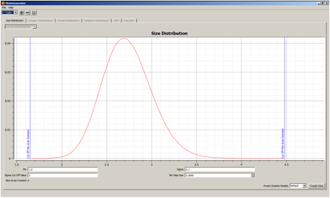
- Phase Bank this is the area where the user can enter information about the phase for which statistics are currently being generated. The Plus Button allows the user to add a phase, the Minus Button allows the user to remove a phase and the Wheel Button allows the user to edit the currently selected phase.
-
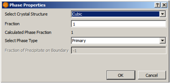
- a. Select Crystal Structure - this allows the user to specify the crystal structure of the phase. Currently, the two options are Cubic and Hexagonal.
- b. Fraction - this is the volume fraction of the phase. The Calculated Phase Fraction is updated as more phases are added, by scaling the current total of all the phases fractions to 1 (in case the user's total is not equal to 1 when finished).
- c. Select Phase Type - this specifies the type of the phase. Currently, the two types of phases are Primary and Precipitate. Note that there must be at least one Primary phase before any Precipitate phase can be created or the Synthetic Builder will fail.
- d. Fraction of Precipitate on Boundary - if the phase type is set to Precipitate, then the user must specify the number fraction of the precipitates that are located on grain boundaries of the primary phase. This value will be scaled to 1 if the user's value is larger than 1. The value is keyed to -1 for Primary phases.
- Mu this is the average value of the lognormal grain size distribution
- Sigma this is the standard deviation of the lognormal grain size distribution
- Sigma Cut Off Value - this allows the user to truncate the distribution to remove very large grains
-
Bin Step Size - this is the size of bin to use in segregating the grains into size classes for correlating other statistics to grain size.
- a.
- Note that the Bins to be Created is displayed in the bottom left corner
-
Preset Statistic Models - this allows the user to select a 'morphological-type' of microstructure to populate the default data.
- a. Default - this populates the statistics with generic random data that may not create a 'buildable' microstructure. This option should only be used if the user is going to enter the values on all the statisticss themselves.
- b. Equiaxed - this populates the statistics with data that is designed to generate a random equiaxed microstructure.
- c. Rolled - this populates the statistics with data that is designed to generate a rolled microstructure with elongated grains with user defined aspect ratios.
-
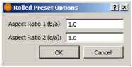
- i. Aspect Ratio 1 this is the aspect ratio between the dimensions of the grains in the rolling direction and transverse direction, respectively.
- ii. Aspect Ratio 2 this is the aspect ratio between the dimensions of the grains in the rolling direction and normal direction, respectively. This value must be larger than Aspect Ratio 1 or the default values will be wrong.
-
Create Default Data - this locks in the values the user has entered and populates the others with default values. The user can move through the others and change any default values if desired.
Omega 3
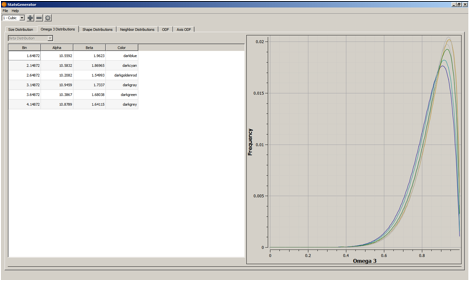
- Bin - this column is calculated from the size distribution and cannot be changed.
- Alpha - this is the alpha parameter of a Beta distribution. Omega 3 is normalized and can only be between 0 and 1, so the Beta distribution is a good fit
- Beta - this is the beta parameter of the Beta distribution.
- Color - this allows the user to change colors of the curves for image creation or easier identification during stats generation
Shape Distributions (there are 3 aspect ratio combinations)
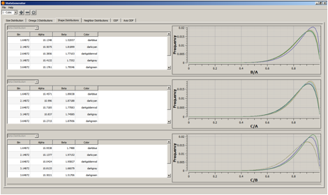
- Bin - this column is calculated from the size distribution and cannot be changed.
- Alpha - this is the alpha parameter of a Beta distribution. B/A, C/A and C/B are normalized and can only be between 0 and 1, so the Beta distribution is a good fit
- Beta - this is the beta parameter of the Beta distribution.
- Color - this allows the user to change colors of the curves for image creation or easier identification during stats generation
Neighbor Distributions
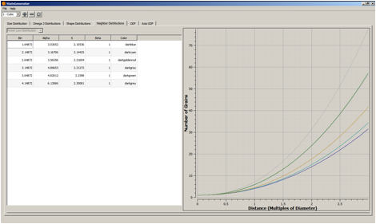
- Bin - this column is calculated from the size distribution and cannot be changed.
- Alpha - this is the alpha parameter of a Power Law distribution.
- K -
- this is the exponent of a Power Law Distribution
- Beta - this is the beta parameter of a Power Law distribution.
- Color - this allows the user to change colors of the curves for image creation or easier identification during stats generation
ODF
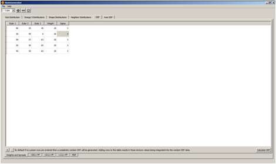
-
Weights and Spreads Sub-Tab -
- a. Euler 1-3 - these are the Euler angles that define an orientation that the user would like to increase in weight.
- b. Weight - this is the weight in MRD (multiples of random) to be assigned to the orientation listed
- c. Sigma - this is the spread to use in blurring out the orientation chosen. The value corresponds to the number of bins in Rodrigues (orientation) space it takes for the MRD value entered in the Weight column to reduce to 0.0 (decreasing quadratically from the bin of the entered orientation).
- d. Calculate ODF - this builds the ODF and then creates pole figures (PFs) for the user to inspect.
Pole Figure (PF) Sub-Tabs
- a. There are three PFs formed for each of the crystal structures that can be chosen (though they are of different directions for the different crystal structures).
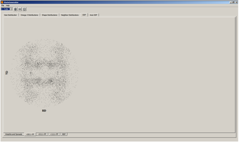
MDF Sub-Tab
- a. This sub-tab will display the baseline MDF for the generated ODF. This is done by randomly sampling pairs of orientations from the ODF and calculating the misorientation (axis-angle only). Only the angle is plotted in the misorientation distribution plot. The user can also add axis-angle pairs to increase in weight.
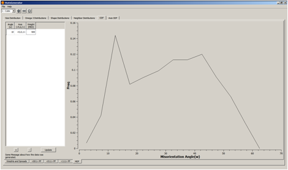
- i. Angle this is the angle of the misorientation to increase in weight.
- ii. Axis this is the axis of the misorientation to increase in weight. If the crystal structure being used for the phase is Hexagonal, then this axis is in the 3-index, orthogonal convention, not the true (hkil) convention.
- iii. Weight this is the weight in units of MRD (multiples of random) of the entered misorientation.
Axis ODF
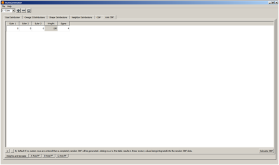
-
Weights and Spreads Sub-Tab -
- a. Euler 1-3 - these are the Euler angles that define an orientation that the user would like to increase in weight.
- b. Weight - this is the weight in MRD (multiples of random) to be assigned to the orientation listed
- c. Sigma - this is the spread to use in blurring out the orientation chosen. The value corresponds to the number of bins in Rodrigues (orientation) space it takes for the MRD value entered in the Weight column to reduce to 0.0 (decreasing quadratically from the bin of the entered orientation).
- d. Calculate ODF -
- this builds the ODF and then creates pole figures (PFs) for the user to inspect.
Pole Figure (PF) Sub-Tabs
- a. There are three PFs formed, which correspond to the location of the 3 principal axes of the grains to be generated (i.e a > b > c).
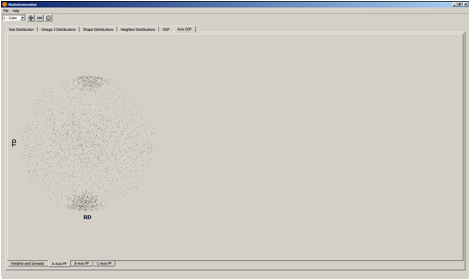